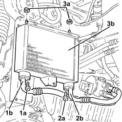
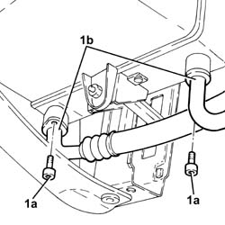
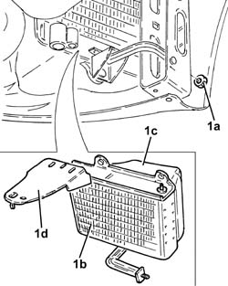

1084C34 engine oil cooling radiator - r + r
- Path
- Procedures > 10 ENGINE > 1084 ENGINE LUBRICATION SYSTEM > 1084C engine oil cooling circuit > 1084C34 engine oil cooling radiator - r + r
- Kind
- repair procedure (removal / refitting; the operation number is the code)
- Applies to
- engines: 1.9 JTD 16v, 2.4 JTD 20v; all production periods
- Interactive page
- https://sloeber94.github.io/elrnDB-a156/en/#/3237870
Applies to: engines: 1.9 JTD 16v; all production periods
 Removing
Removing
 Refitting
RefittingPosition the vehicle on the ramp.
Proceed with removal 7055B54 under-engine guard - r r .
Proceed with removal 7055A43 central front grille - r r .
Proceed with removal 7055A41 RIGHT FRONT GRILLE - R.R. .
Proceed with removal 7210E10 R.R. FRONT BUMPER .
Proceed with removal 1084C40 Air DUCT for engine oil cooling radiator - R.R . .
1. Undo the bolt (1a) and disconnect the cooling radiator engine oil supply pipe (1b), radiator side.
2. Undo the bolt (2a) and disconnect the cooling radiator engine oil return pipe (2b), radiator side.
3. Undo the nuts (3a) and remove the engine cooling radiator (3b).

Applies to: engines: 1.9 JTD 16v; all production periods
Refitting
RemovingPlace the engine oil cooling radiator back in its housing and fix it using the nuts.
Connect the engine oil return pipe from the cooling radiator, radiator side, and tighten the bolt.
Connect the engine oil supply pipe to the cooling radiator, radiator side, and tighten the bolt
Proceed with refitting 1084C40 Air DUCT for engine oil cooling radiator - R.R . .
Proceed with refitting 7210E10 R.R. FRONT BUMPER .
Proceed with refitting 7055A41 RIGHT FRONT GRILLE - R.R. .
Proceed with refitting 7055A43 central front grille - r r .
Proceed with refitting 7055B54 under-engine guard - r r .
Refill the engine oil lubrication system - 0010T11 engine oil check level and top up .
Remove the car from the ramps.
Applies to: engines: 2.4 JTD 20v; all production periods
Removing
RefittingPosition the vehicle on the ramp.
Proceed with removal 4450B04 right front wheel r r .
Proceed with removal 7055B54 under-engine guard - r r .
Proceed with removal - 7055B91 Right front WHEEL ARCH LINER - R.R. .
Proceed with removal 1008B10 power unit front mount (timing side) flexible block - replace .
1. Undo the bolts (1a) and disconnect the oil supply and return pipes (1b), radiator side.

Applies to: engines: 2.4 JTD 20v; all production periods
1. Undo the nut (1a) and remove the engine oil cooling radiator (1b) complete with duct (1c) and bracket (1d).

Applies to: engines: 2.4 JTD 20v; all production periods
Refitting
RemovingRefit the engine oil cooling radiator complete with duct and bracket in its seating, then secure it with its nut.
Connect the oil supply and return pipes, radiator side, and tighten the bolts.
Proceed with refitting 1008B10 power unit front mount (timing side) flexible block - replace .
Proceed with refitting - 7055B91 Right front WHEEL ARCH LINER - R.R. .
Proceed with refitting 7055B54 under-engine guard - r r .
Proceed with refitting 4450B04 right front wheel r r .
Refill the engine oil lubrication system - 0010T11 engine oil check level and top up .
Remove the car from the ramps.
Topics linked from this page (7)
- 1008B10 power unit front mount (timing side) flexible block - replace
- 1084C40 Air DUCT for engine oil cooling radiator - R.R .
- 4450B04 right front wheel r r
- 7055A41 RIGHT FRONT GRILLE - R.R.
- 7055A43 central front grille - r r
- 7055B54 under-engine guard - r r
- 7210E10 R.R. FRONT BUMPER